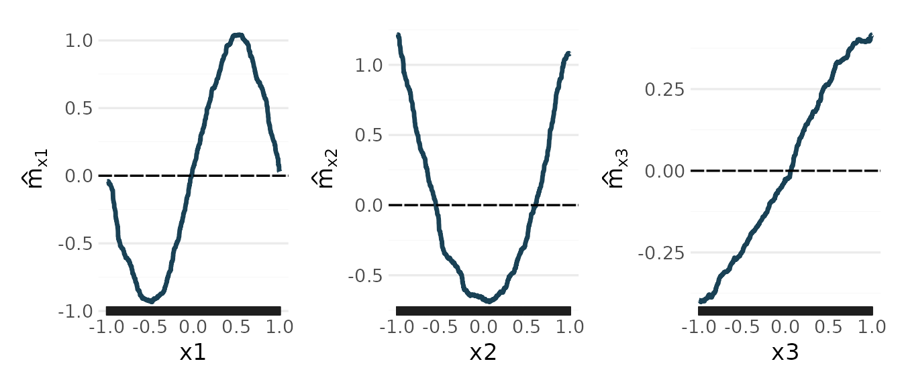
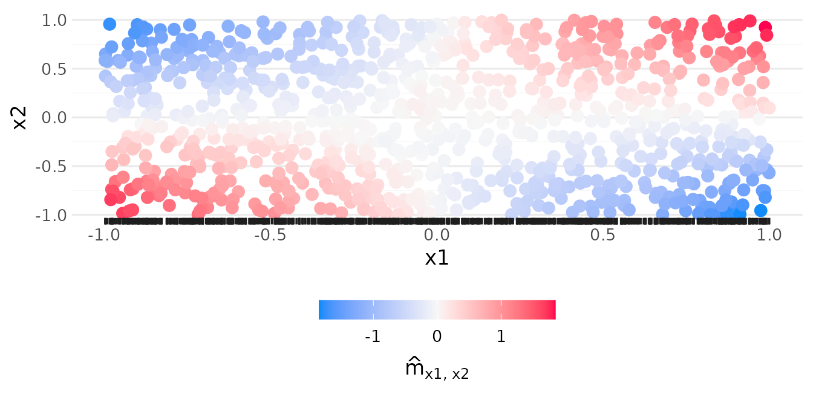

Getting Started with randomPlantedForest
Source:vignettes/randomPlantedForest.Rmd
randomPlantedForest.RmdrandomPlantedForest implements Random Planted Forest (Hiabu, Mammen & Meyer),
a tree ensemble whose predictions you can read off directly. The fitted
model is a short sum of main effects and interactions: these components
add up exactly to the prediction, so the explanation is exact and not a
post-hoc approximation, and each component can be plotted on its own.
Interactions of three predictors are simplified such that each can be
displayed as the sum of a limited number (max_panels) of
heat maps.
This guide fits a model, prints it, predicts with it and reads its components.
A first model
To see what the model recovers, we simulate data whose components are
known. The outcome depends on x1, x2 and
x3 through main effects of different shapes, and on
x1 and x2 jointly through a product;
x4 has no effect:
set.seed(1)
n <- 1000
sim <- data.frame(
x1 = runif(n, -1, 1),
x2 = runif(n, -1, 1),
x3 = runif(n, -1, 1),
x4 = runif(n, -1, 1)
)
true_effects <- list(
x1 = function(x) sin(pi * x),
x2 = function(x) 2 * (x^2 - 1 / 3),
x3 = function(x) x / 2
)
sim$y <- 1 +
true_effects$x1(sim$x1) +
true_effects$x2(sim$x2) +
true_effects$x3(sim$x3) +
2 * sim$x1 * sim$x2 +
rnorm(n, sd = 0.3)With uniform, independent predictors each term has mean zero, and the product has no main-effect part, so the four terms are exactly the components the model estimates.
model <- rpf(y ~ ., data = sim, nthreads = 2)
model
#> ── Random Planted Forest model ─────────────────────────────────────────────────
#> Regression. Prediction = intercept + the sum of 4 components.
#> Intercept: 0.998346
#>
#> Components (largest first), importance = share of the variance of the prediction on the training rows:
#> component importance
#> x1:x2 34%
#> x1 34%
#> x2 26%
#> x3 5.4%
#>
#> How it was chosen:
#> The forest: 200 tree families of 84 splits (chosen out of bag; growing stopped at 168).
#> From the forest's 14 nonzero components (purified): those with a share of at least 3% of the forest's Var(prediction), each with one coefficient, fitted out of bag (rule R).
#> Rule and threshold chosen by out-of-bag error (1-SE rule; 5 folds, seed 1954012425) among 16 candidates.
#> Left out: 10 components, shares together 0.19% (largest x1:x3, 0.054%).The model has found the three main effects and the x1:x2
interaction, and nothing else. With its defaults, rpf()
does three things in one call:
- It grows a forest of 200 tree families, each a sum of trees on up to
three predictors (
max_interaction = 3), and chooses the number of splits while they grow, by the error on the training rows each family did not see (out of bag). - It prunes the forest’s components: it keeps those with a large enough share of the variance of the prediction, and refits one coefficient per kept component, choosing the rule and the threshold out of bag.
- It simplifies every kept component of three predictors: the
component is coarsened such that it can be shown as the sum of at most
10 heat maps (
max_panels = 10), and the model is pruned again.
The printout lists the components with their importance, their share of the variance of the prediction, and then how they were chosen. Reading the model explains it line by line.
Predictions
predict() returns a tibble, as in tidymodels:
The components
predict_components() evaluates every component at the
rows of new_data:
components <- predict_components(model, new_data = sim)
components$intercept
#> [1] 0.9983457
head(components$m)
#> x1 x2 x3 x1:x2
#> <num> <num> <num> <num>
#> 1: -0.9207951 -0.6878638 0.37377832 -0.08927554
#> 2: -0.6655776 -0.4497814 0.39495808 -0.26487014
#> 3: 0.4394999 -0.5808767 0.36763023 -0.05329863
#> 4: 0.5954473 0.9731491 -0.08433566 1.52054811
#> 5: -0.8914439 0.4994092 -0.28118496 0.84039936
#> 6: 0.6420453 0.9485723 -0.37443906 -1.38340226Each column of m is one component’s contribution to the
prediction, on the scale of the outcome. With the intercept they add up
to the prediction:
all.equal(
components$intercept + rowSums(components$m),
predict(model, new_data = sim)$.pred
)
#> [1] TRUEThe glex package plots the components. A main effect is a curve:
library(glex)
library(patchwork)
plot(components, "x1") + plot(components, "x2") + plot(components, "x3")
The curves follow the true functions: a sine, a parabola and a line. Like any tree-based model, they are step functions and flatten towards the edges of the data, where few rows determine them.
An interaction of two predictors is drawn as the data, coloured by
the component’s value. The x1:x2 component is positive
where x1 and x2 have the same sign, as the
product 2 x1 x2 is:

Reading the model shows more plots, also of components of three predictors.
Classification
For a factor outcome, rpf() fits a classification model,
with the same steps and defaults. predict() gives
probabilities, or classes with type = "class":
penguins <- na.omit(palmerpenguins::penguins)
by_species <- rpf(species ~ ., data = penguins, nthreads = 2)
predict(by_species, penguins[c(1, 200, 300), ])
#> # A tibble: 3 × 3
#> .pred_Adelie .pred_Chinstrap .pred_Gentoo
#> <dbl> <dbl> <dbl>
#> 1 1.000 0.0000606 0.0000942
#> 2 0.000232 0.00105 0.999
#> 3 0.0150 0.985 0.000234
predict(by_species, penguins[c(1, 200, 300), ], type = "class")
#> # A tibble: 3 × 1
#> .pred_class
#> <fct>
#> 1 Adelie
#> 2 Gentoo
#> 3 ChinstrapWith the default loss, "logit", the components add up to
scores on the log-odds scale (one score with two classes, otherwise one
per class), which predict() turns into probabilities; see
Classification.
Settings you may want
-
max_interactioncaps the number of predictors per component:1for an additive model,2for pairs,3(the default) for triples. -
max_panelssets how many heat maps a component that has three or more predictors may need (10); fewer are easier to read, andInfleaves these components as the forest has them. -
n_familiessets the number of tree families (200); fewer fit faster, more usually give better accuracy. -
nthreadsfits in parallel; the result does not depend on it. -
tune = TRUE(or"quick", a shorter search): tunes, out of bag, how greedily splits are searched (n_try_split_points,share_candidates) and the smallest leaf (min_leaf_rows). The defaults usually do well without it.
Two further settings can be useful for investigating a model, but are usually not recommended:
-
n_splits = <number>fixes the number of splits. By default it is learned while the forest grows, which is usually better than a fixed number. -
prune = FALSEreturns the whole forest (classrpf), without pruning: many more components, most of them tiny. The resulting forest is also not purified automatically ifpruneisFALSE.
rpf() takes a formula, x and y, or a recipes recipe. It does not
accept missing values: impute or remove them first, for instance with a
recipe.
A pruned model (the default) is plain R data, which
saveRDS() keeps as it is. A forest
(prune = FALSE), or a model fitted with
keep_forest = TRUE, holds a C++ object that
saveRDS() does not keep: save
rpf_marshal(model) and restore it with
rpf_unmarshal().
Where next
- Reading the model: the printed summary, importance, plots, three-way components.
-
How
the forest is grown: tree families,
max_interaction, the split search. -
The
number of splits and further tuning: the out-of-bag stop and
tune. - Pruning to a sparse model: what is left out and why.
- Classification.
- Speed, memory and saving models, with tidymodels and mlr3.